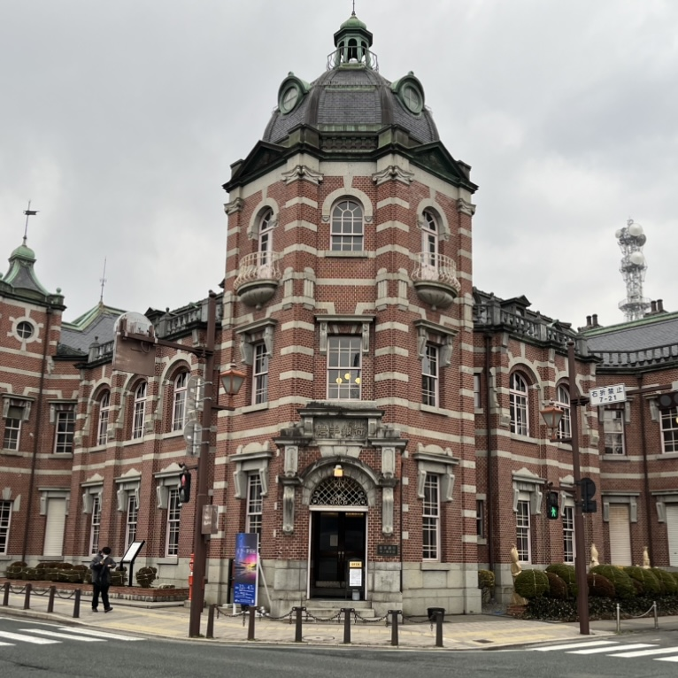
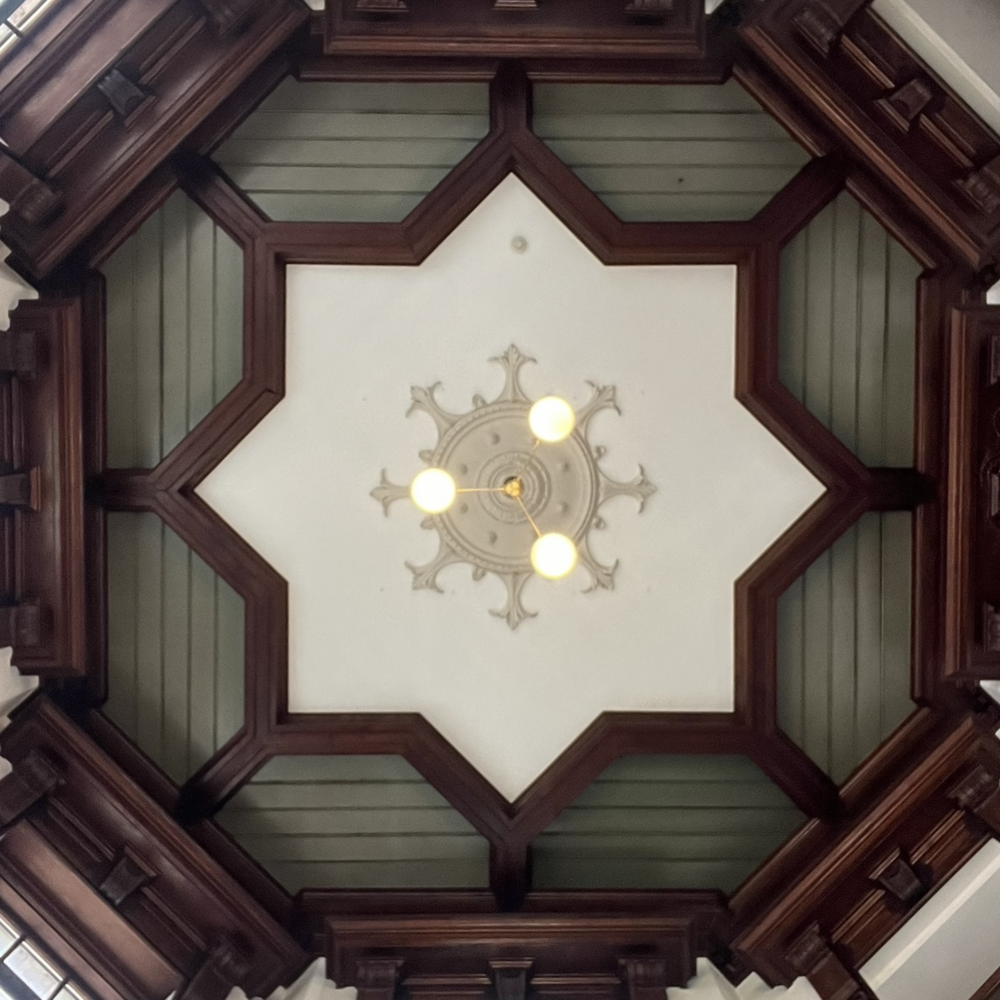
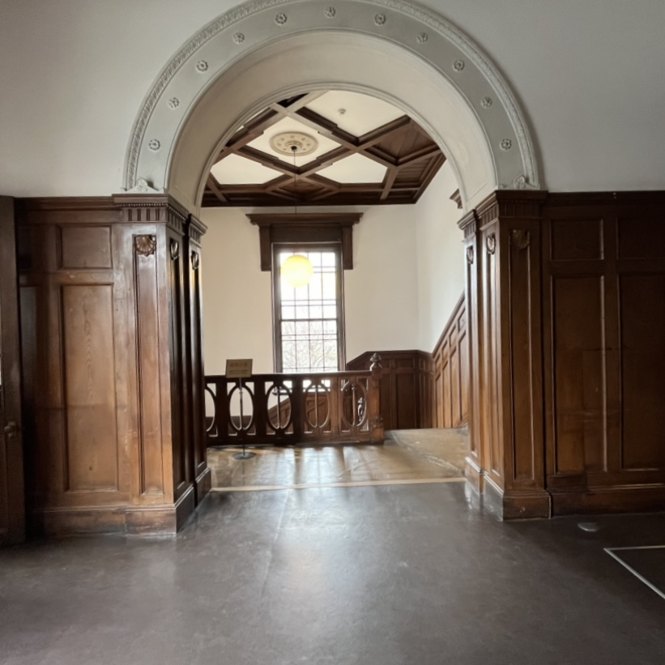
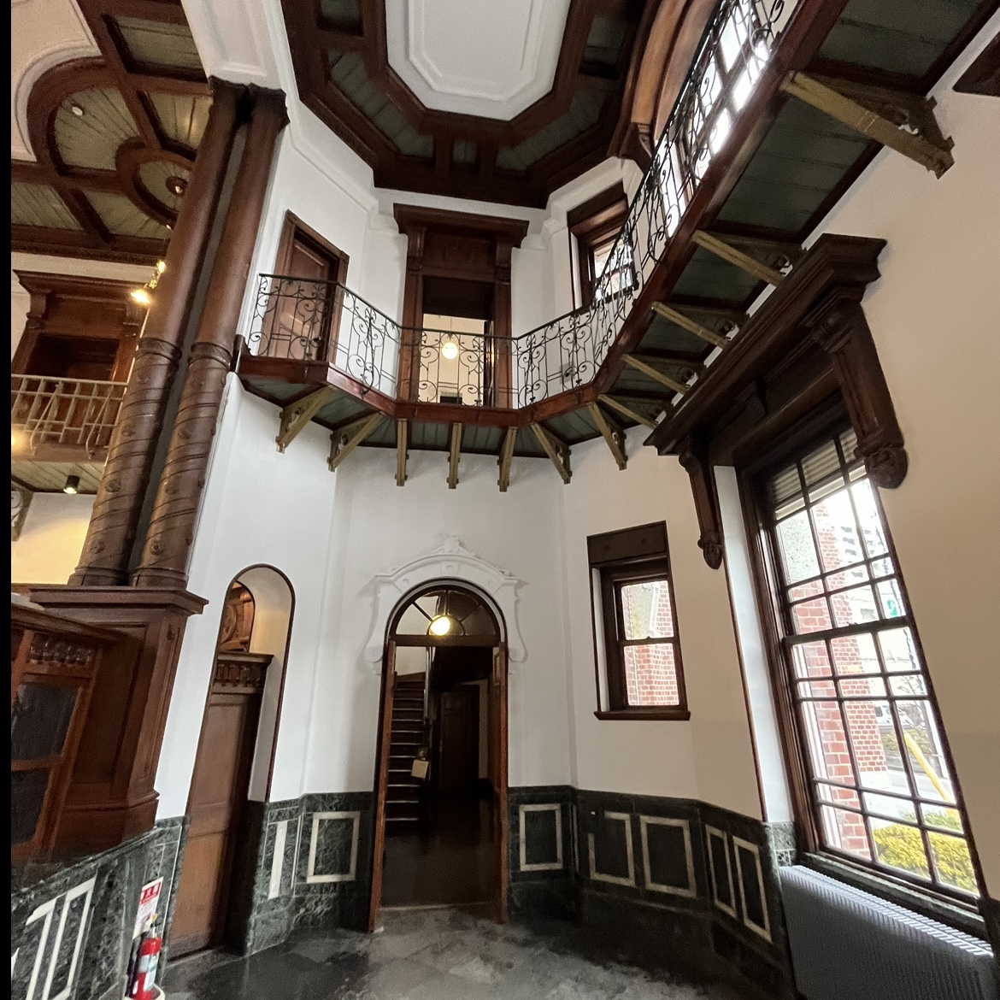

近代建築紹介
岩手銀行赤レンガ館

岩手・盛岡市に位置。岩手銀行赤レンガ館は、1911（明治44）年に盛岡銀行の本店行舎として落成しました。設計は東京駅でも知られる、辰野・葛西建築設計事務所によるもので、辰野金吾が設計した建築としては東北地方に唯一残る作品です。
最大の特徴は8角形のエントランスです。8角形の中にデザインされた設計美と四方八方にある窓から入り込む日の光は絶品です。
photo gallery


